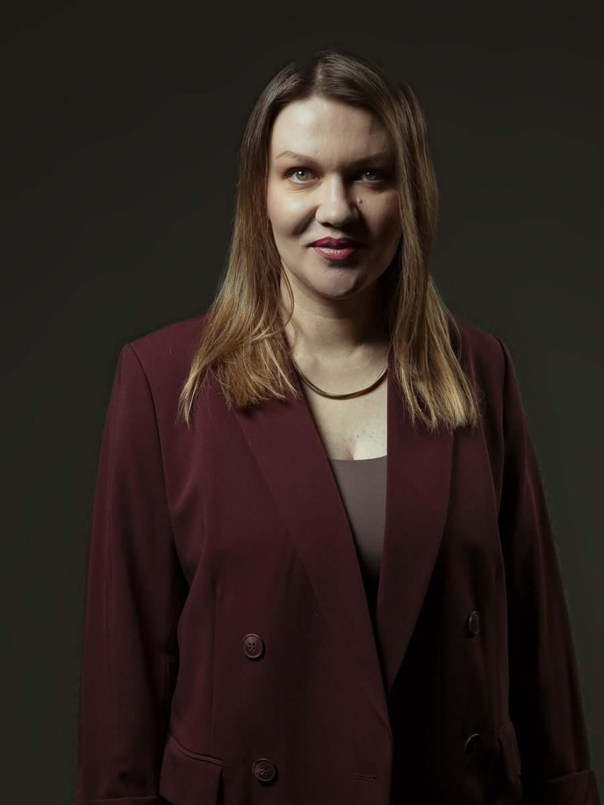
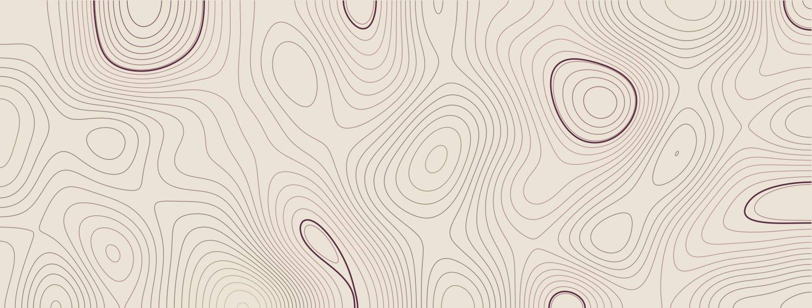
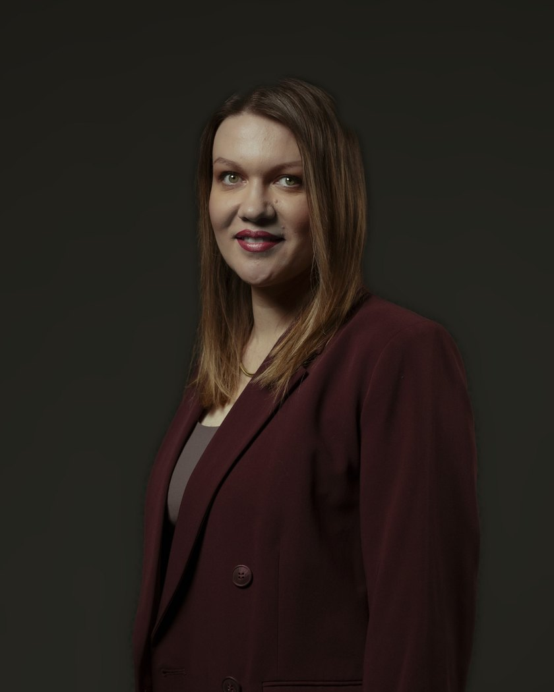

„Jakoś dociągnę do urlopu.”
A po urlopie sił starcza na tydzień.
Mapa przeciążenia to pomiar wypalenia zawodowego zwalidowanym kwestionariuszem i dwie rozmowy o tym, co z niego wynika. Spotkania odbywają się online.
Rozmowa wstępna jest bez opłaty i bez zobowiązań.

Dla osób, które pracują, ale od miesięcy robią to resztką sił.
To może być o Tobie, jeśli:
Jeśli rozpoznajesz u siebie kilka z tych rzeczy, w Mapie sprawdzimy, skąd się biorą i co w Twoim tygodniu warto zmienić najpierw.
Żeby przestać zgadywać.
Większość osób, z którymi rozmawiałam, uważała, że po prostu sobie nie radzi albo jest leniwa. Wynik pokazuje, w których obszarach zmęczenie jest najsilniejsze. W rozmowie często okazuje się, że to reakcja na to, co dzieje się w pracy, a nie cecha charakteru.
W pracy zwykle wszystko jest zrobione na czas, więc z zewnątrz wygląda to dobrze. Koszt widać dopiero po pracy: wieczorem nie masz siły ugotować obiadu, odpisać znajomym albo usiąść do czegoś, co kiedyś sprawiało przyjemność.
Na drugim spotkaniu ustalamy jedną zmianę w Twoim zwykłym tygodniu. Ma być mała, tak żeby dało się ją zrobić mimo zmęczenia.
Przeciążenie zwykle zaczyna się od drobiazgów: przestajesz gotować, coraz trudniej Ci zacząć dzień albo nie możesz się skupić nawet na tym, co lubisz. Razem nazywamy Twoje trzy sygnały ostrzegawcze i zapisujemy je w raporcie.

Odpowiadasz online na pytania o to, jak się czujesz w pracy i poza nią. Zajmie Ci to kilkanaście minut, najpóźniej dwa dni robocze przed pierwszym spotkaniem.
Przez 50 minut online rozmawiamy o Twoim wyniku i o tym, jak naprawdę wygląda Twój tydzień w pracy. Często już wtedy wychodzi coś, czego się nie spodziewasz.
Masz tydzień, żeby to, co wyszło na pierwszym spotkaniu, zobaczyć w swojej codziennej pracy.
Też trwa 50 minut. Wychodzisz z niego z jedną zmianą na najbliższe tygodnie i z listą swoich sygnałów ostrzegawczych.
Dostajesz na piśmie swój wynik, pierwszy krok i trzy sygnały ostrzegawcze opisane Twoimi słowami. Możesz do niego wrócić za miesiąc albo za pół roku.
W odpowiedziach najmocniej widać wyczerpanie: energii po pracy zostaje najmniej. Skupienie jest w strefie pomarańczowej, reakcje emocjonalne mieszczą się w strefie zielonej.
Raport zostaje u Ciebie i możesz z nim pracować samodzielnie. Jeśli wolisz nie robić tego w pojedynkę, możemy pracować dalej. Nazywam to Rusztowaniem, bo rusztowanie stawia się na czas, kiedy konstrukcja jeszcze sama nie stoi. To trzy spotkania co dwa tygodnie: na każdym sprawdzamy jedną zmianę w Twoim tygodniu pracy, a na koniec powtarzamy pomiar, żeby zobaczyć, czy wynik się zmienił. 690 zł.
Bo „wypalenie” to jedno słowo na kilka różnych rzeczy. Pomiar pokazuje, w którym z czterech obszarów jest Ci teraz najtrudniej, a od tego zależy, co warto zmienić najpierw.
Masz też punkt odniesienia: za kilka miesięcy powtarzasz kwestionariusz i widzisz, czy wynik się zmienił. Czasem okazuje się również, że wypalenie nie tłumaczy wszystkiego. Lepiej dowiedzieć się o tym na początku.
Może mieć. W terapii zwykle patrzy się na całe życie. Mapa dotyczy tylko pracy, a wynik opiera się na zwalidowanym kwestionariuszu. Raport z wynikiem i Twoimi sygnałami możesz zabrać na sesję.
Dobrze, żeby osoba, która Cię prowadzi, o tym wiedziała. Jeśli właśnie zmienia się Twoje leczenie albo jesteś w trudniejszym momencie, z Mapą lepiej poczekać.
Mapa opiera się na kwestionariuszu, którego używa się w badaniach naukowych nad wypaleniem. Ma polską adaptację, a progi stref pochodzą z opublikowanych badań.
Najważniejsze dzieje się jednak potem. Na dwóch spotkaniach sprawdzamy, czy wynik zgadza się z tym, jak naprawdę wygląda Twój tydzień. Potem ustalamy, co zrobić z wynikiem. Bez rozmowy z samego wyniku niewiele wiadomo.
Nie. Mapa to nie terapia i nie wystawiam zwolnień, od tego jest lekarz. Raport jest dla Ciebie i nie zastąpi dokumentu dla lekarza czy pracodawcy.
Nie zostajesz z nim sama ani sam. Na drugim spotkaniu ustalamy, jaki krok będzie dla Ciebie najlepszy, a ja zapisuję to w raporcie. Jeśli lepszym krokiem okaże się terapia albo wizyta u psychiatry, powiem to wprost i wskażę, gdzie szukać.
Teraz nie. Zacznij od lekarza albo psychoterapeuty. Jeśli potrzebujesz rozmowy od razu, całodobowo działają linie 116 123 oraz 800 70 22 22, a przy bezpośrednim zagrożeniu życia 112.
Mapę robię z osobami, które teraz pracują.

mgr psychologii
Przez kilkanaście lat pracowałam w korporacji, w planowaniu i analizach, więc przeciążenie w pracy znam nie tylko z badań, ale też z własnego kalendarza.
Zanim zajęłam się psychologią, skończyłam informatykę i ekonometrię. Została mi po tym słabość do liczb i porządnych raportów, której nie zamierzam się pozbywać.
Psychologię skończyłam z wyróżnieniem w 2026 roku. Pracę magisterską napisałam o wypaleniu u muzyków zawodowych, na tym samym kwestionariuszu, na którym pracuję teraz, a jego autorzy z KU Leuven zgodzili się, żebym używała go w swojej praktyce.
Mam też za sobą szkolenie coachingowe (159 godzin) i kurs coachingu kariery. Przydają się wtedy, gdy wynik jest już znany i trzeba ustalić, co z nim zrobić, tak żeby decyzje zostały Twoje, a nie moje.
Umów rozmowę wstępną albo napisz. Rozmowa jest bez opłaty i bez zobowiązań.
Wracaj do siebie powoli.